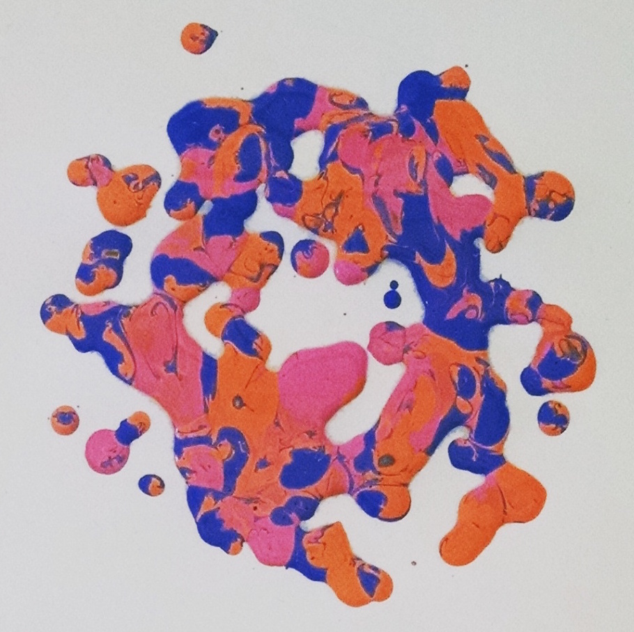

Work
Arduino Borealis
Combines opaque hand-painted landscapes with LED matrix animations behind semi-translucent windows. Arduino controls RGB value, pattern, and timing. Tutorial featured on MLH.io and Hackaday.com.

Record Printer
Frequencies present in music fall into a range associated with a particular colored paint. Miniature peristaltic pumps are activated depending on a frequency sampled and expel paint onto a spinning build platform. Intensity of music moves pumps on belt system.
Drone Pollock
IoT art hack event at Technica, fall 2015. Participants inputted coordinates online for an AR Parrot drone to flip paint onto a 15 ft canvas. Drone navigated canvas using OpenCV outside-in tracking. Roughly 200 contributors world-wide.